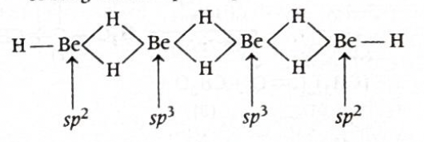
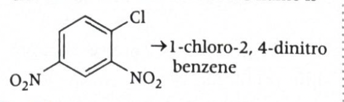
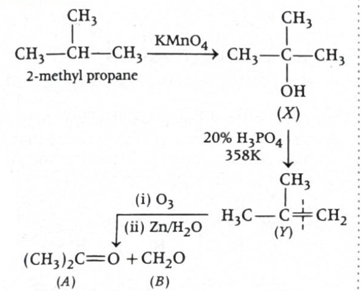
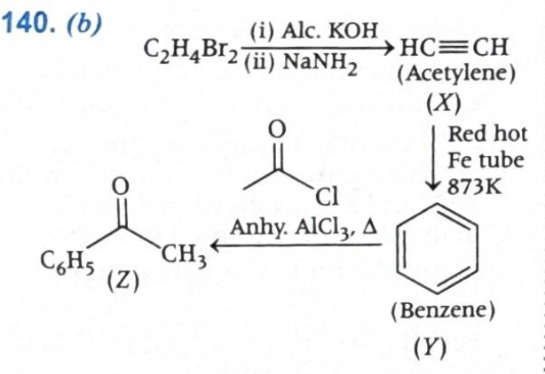
Answer: \((a)\ X_5Y_8\)
Solution:
Given:
In any cubic unit cell, each corner atom is shared by \(8\) adjacent unit cells.
So contribution of one corner atom to one unit cell is:
\(\dfrac{1}{8}\)
A bcc unit cell has \(8\) corners, so total contribution of \(X\) atoms from corners would normally be:
\(8 \times \dfrac{1}{8} = 1\)
Three corner atoms are missing.
Since each corner contributes \(\dfrac{1}{8}\), the missing contribution is:
\(3 \times \dfrac{1}{8} = \dfrac{3}{8}\)
Therefore, effective number of \(X\) atoms present in the unit cell is:
\(1 - \dfrac{3}{8} = \dfrac{5}{8}\)
In bcc, the atom at the body centre lies completely inside the unit cell.
So its contribution is:
\(1\)
Therefore, effective number of \(Y\) atoms in the unit cell is:
\(1\)
So,
\(X:Y = \dfrac{5}{8}:1\)
Multiply both sides by \(8\):
\(X:Y = 5:8\)
Hence the formula of the compound is:
\(\boxed{X_5Y_8}\)
Therefore:
\(\boxed{(a)\ X_5Y_8}\)
Why this method works:
JEE / NCERT takeaway:
\(\dfrac{1}{8}\)
\(\dfrac{1}{2}\)
\(\dfrac{1}{4}\)
\(1\)
\(8 \times \dfrac{1}{8} + 1 = 2\)
Helpful diagram:
Corners: 8 positions of X
Each corner contributes = 1/8
So normally:
X = 8 x (1/8) = 1
If 3 corner atoms are missing:
X = 1 - 3 x (1/8) = 5/8
Body centre:
Y = 1
Thus:
X : Y = 5/8 : 1 = 5 : 8
1-minute solving trick:
\(\text{corners} = 1,\quad \text{body centre} = 1\)
\(X = 1 - \dfrac{3}{8} = \dfrac{5}{8}\)
\(X:Y = \dfrac{5}{8}:1 = 5:8\)
\(X_5Y_8\)
More intuitive shortcut:
\(\dfrac{5}{8}\)
\(1\)
Common mistakes to avoid:
Chapter / Topic / Subtopic:
Final exam-style answer:
In bcc lattice, \(X\) atoms are present at corners and \(Y\) atom is present at body centre.
Contribution of \(8\) corner atoms:
\(8 \times \dfrac{1}{8} = 1\)
Since \(3\) corner atoms are missing, effective number of \(X\) atoms becomes:
\(X = 1 - \dfrac{3}{8} = \dfrac{5}{8}\)
Body-centred atom contributes fully, so:
\(Y = 1\)
Therefore,
\(X:Y = \dfrac{5}{8}:1 = 5:8\)
Hence, the formula of the compound is:
\(\boxed{X_5Y_8}\)
Quick cheatsheet:
\(\dfrac{1}{8}\)
\(\dfrac{1}{2}\)
\(\dfrac{1}{4}\)
\(1\)
\(8 \times \dfrac{1}{8} + 1 = 2\)
\(\text{effective atoms} = \text{normal contribution} - \text{missing contribution}\)
Convert fractional ratio into smallest whole-number ratio.
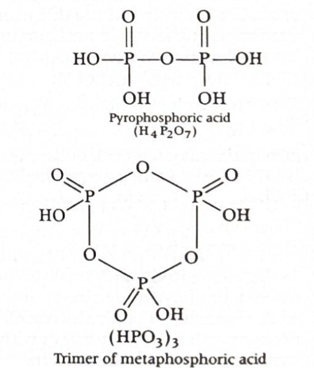
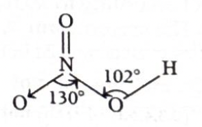
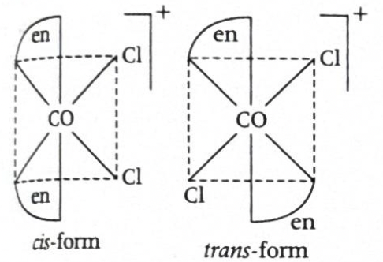
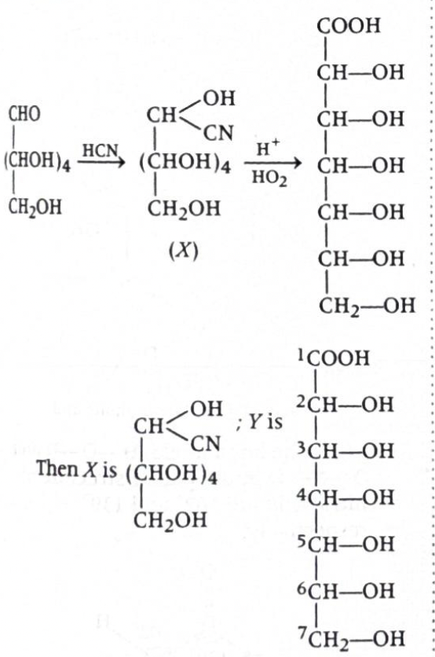
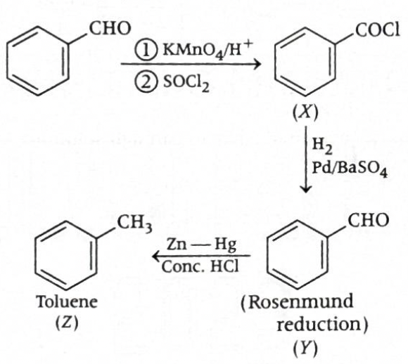
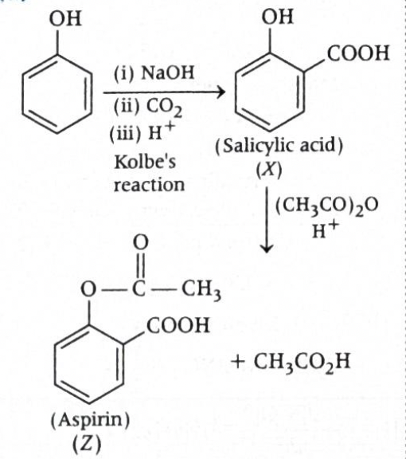
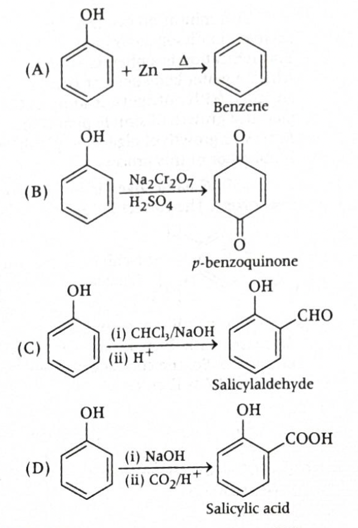
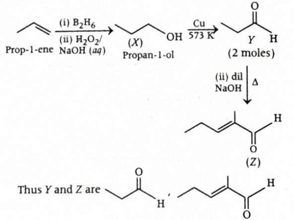
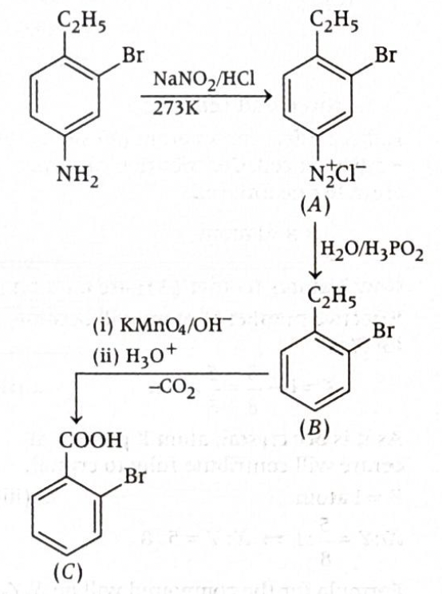